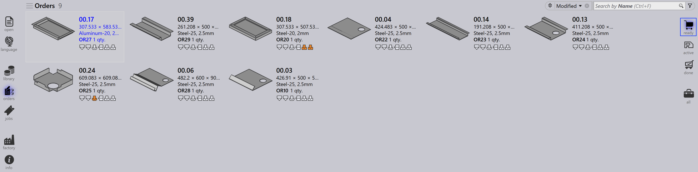

Sipariş görünümü
Siparişler sayfasının sağ tarafındaki seçenekler, siparişlerin işleme aşamalarına göre farklı görünümlerini temsil eder. Bir görünüm seçildiğinde görüntülenen siparişler güncellenir ve iş akışının belirli aşamalarına odaklanmanızı sağlar.
Ready
Ready görünümü seçildiğinde, hazırlanmış ancak henüz işlere dönüştürülmemiş siparişler görüntülenir.

-
İş oluşturmaya hazır siparişleri gösterir.
-
İşleme bekleyen siparişleri belirlemek için kullanışlıdır.
Active
Active görünümü seçildiğinde, işlere dönüştürülmüş ve şu anda işlenmekte olan siparişler görüntülenir.

-
İş aşamasına taşınmış siparişleri temsil eder.
-
Yürütülmekte olan siparişleri takip etmeye yardımcı olur.
-
Devam eden üretimi izlemek için kullanışlıdır.
Done
Done görünümü seçildiğinde, işleme tamamlanmış siparişler görüntülenir.

-
İlişkili işleri tamamlanmış siparişleri gösterir.
-
İş akışının tamamlandığını belirtir.
-
İnceleme ve kayıt tutma için kullanışlıdır.
All
All görünümü seçildiğinde, aşamalarından bağımsız olarak tüm siparişler görüntülenir.

-
Tüm siparişlerin eksiksiz bir genel görünümünü sağlar.
-
Tüm aşamalarda arama ve yönetim için kullanışlıdır.
Sipariş durum çubuğu
Her sipariş kutucuğunun altında gösterilen durum çubuğu, siparişin bir işe bağlı olup olmadığını gösterir. İki tür vardır:
-
Çubuk yok - sipariş herhangi bir işe atanmamıştır.
-
Çubuk var - sipariş bir işin parçasıdır ve çubuk aşağıda listelenen ilgili iş durumunu gösterir.
| Sipariş Durumu | Açıklama |
|---|---|
|
Hazır değil |
|
Hazır |
|
Bend Planned |
|
Sac plaka yok |
|
Bükme kuyruğu |
|
Kesme kuyruğu |
|
Tamam |